DesignCraft 2014: Death Race Survivor
Death Race Survivor is a level design creation made in Minecraft using WorldEdit. The goal behind Death Race Survivor was to develop and test level design. Various thematic levels were created, each with different levels of difficulty, in order to create new and exciting changes for the player as they made progression through the game.
Death Race Survivor information:
- Game : Minecraft (version 1.7.4)
- Technology : WorldEdit
- Team size : 3
These are some of the images from Death Race Survivor: Please note that TNT's are place-holders for enemy spawn points.
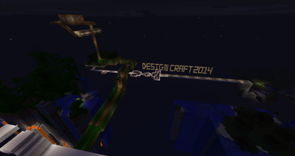 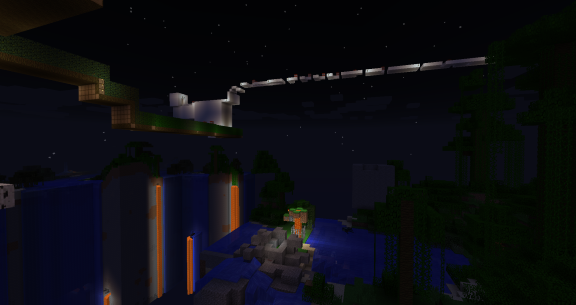 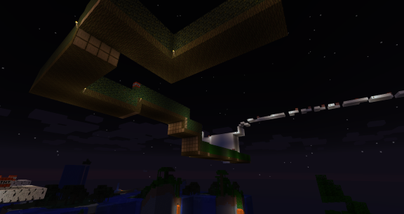 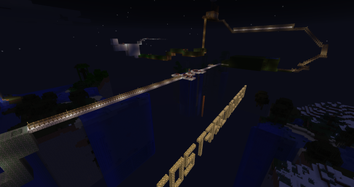 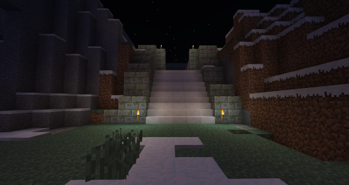 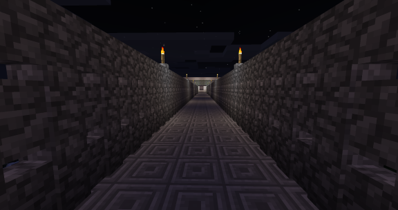 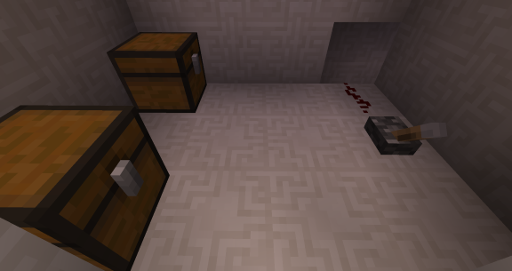 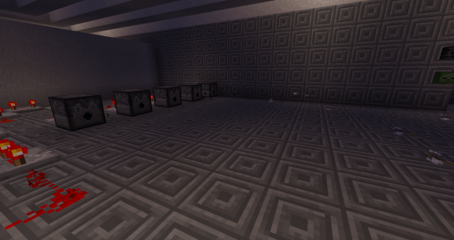 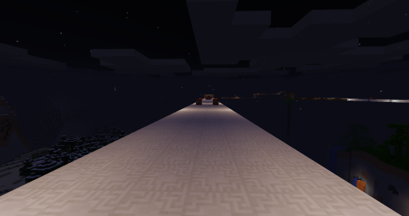 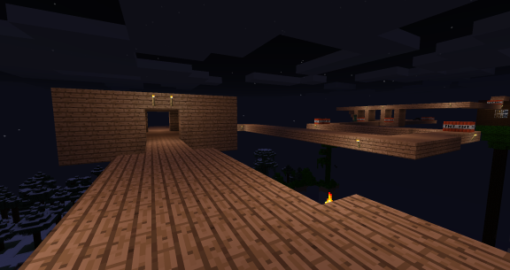 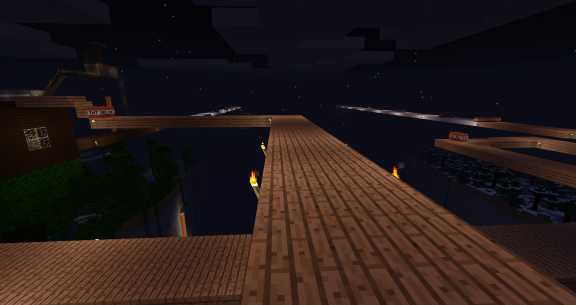 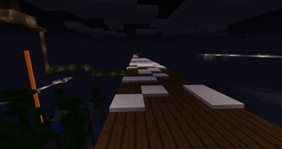 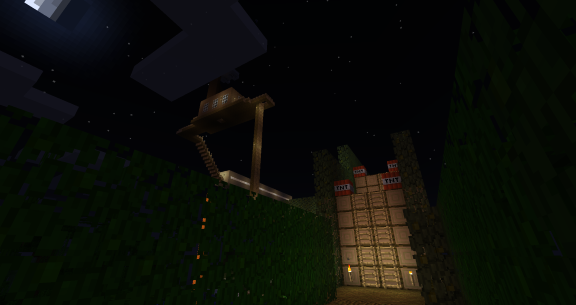
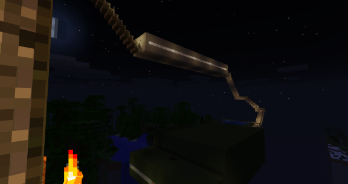
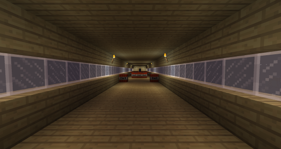
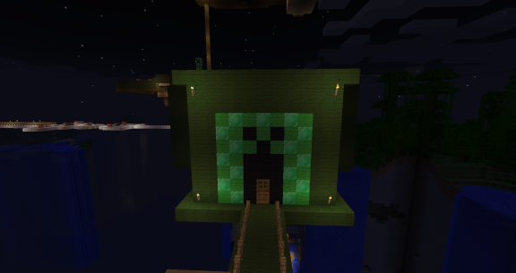
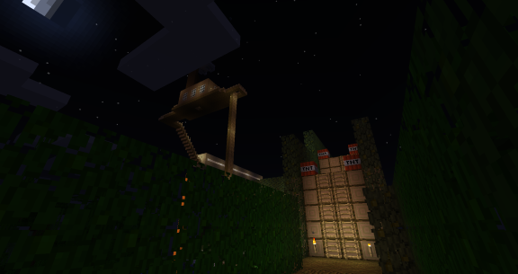
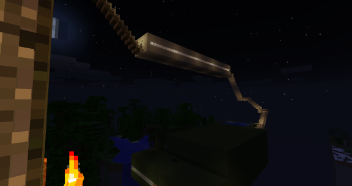
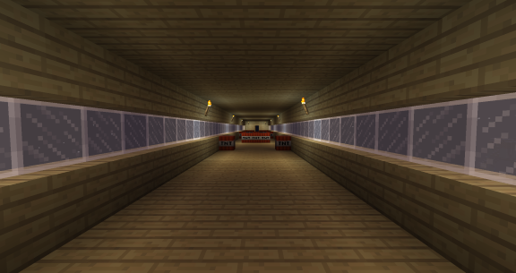
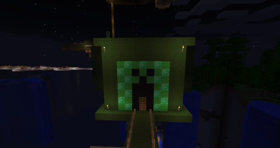
 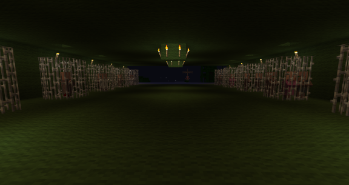
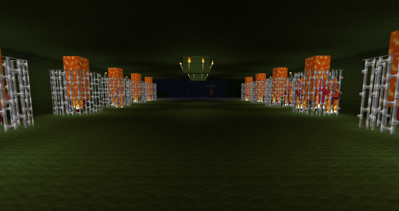
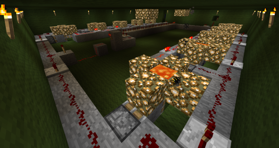
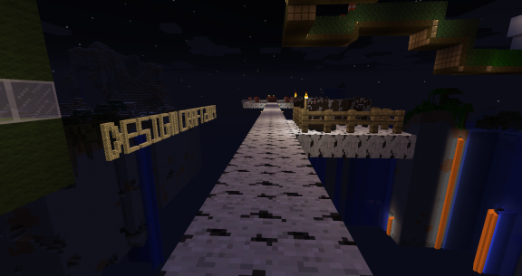
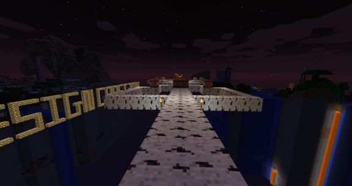
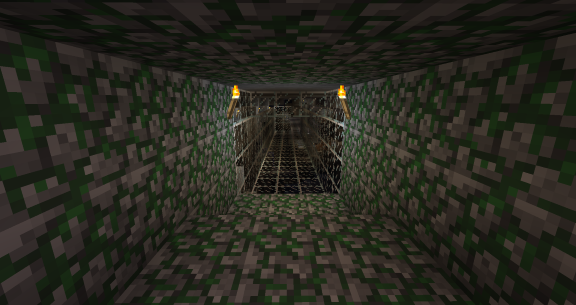
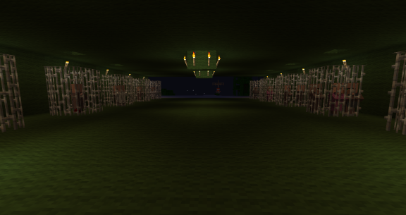
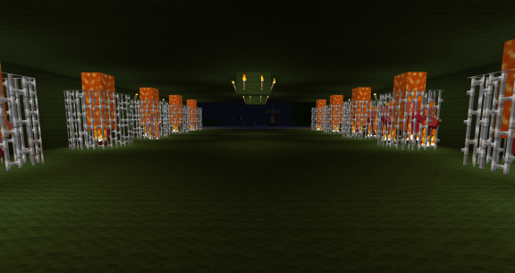
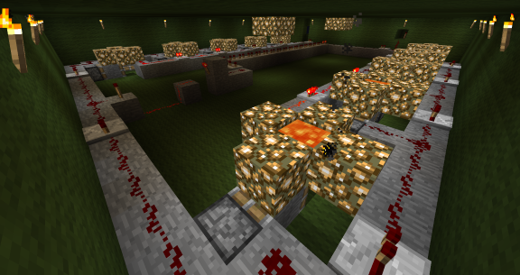
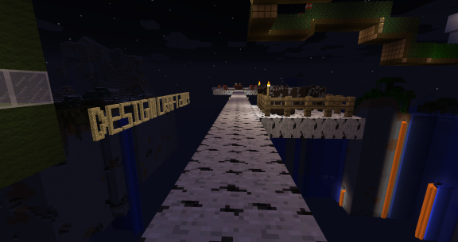
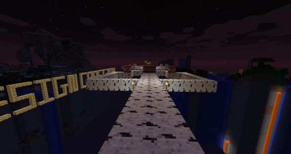
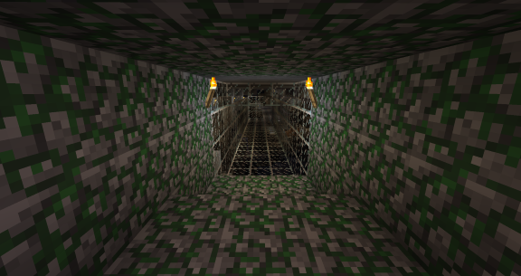

Despair
Despair is a design for a strategy role-playing game that was heavily tested using a paper prototype. Statistics and abilities were created for the various playable classes and enemies in the game. Iterative design was implemented in Despair in order to balance numbers in order to create a fun, yet challenging experience for players.
Despair information:
- Prototype : Paper
- Team size : 3
These are some of the images taken of the Despair prototype:
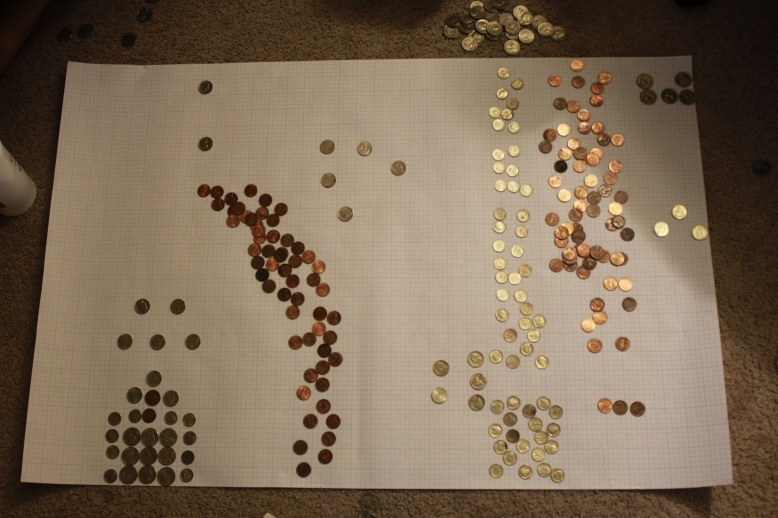 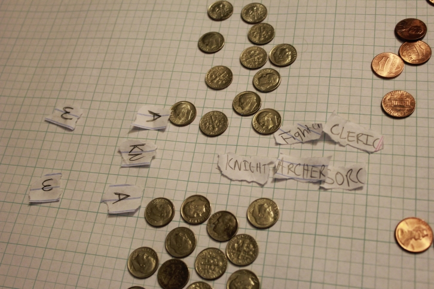 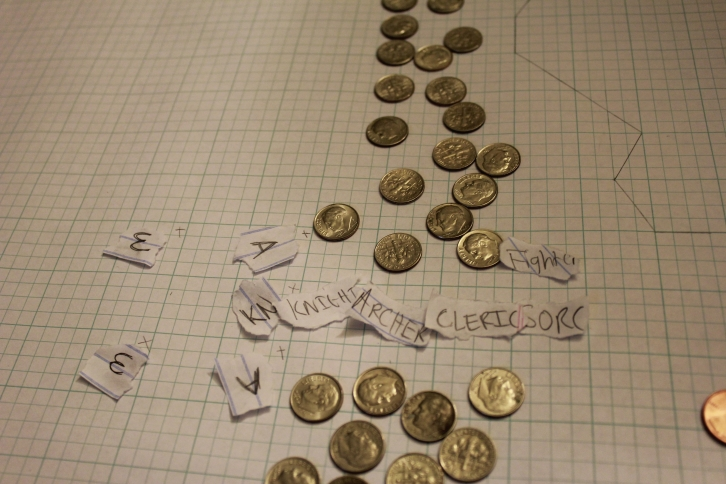 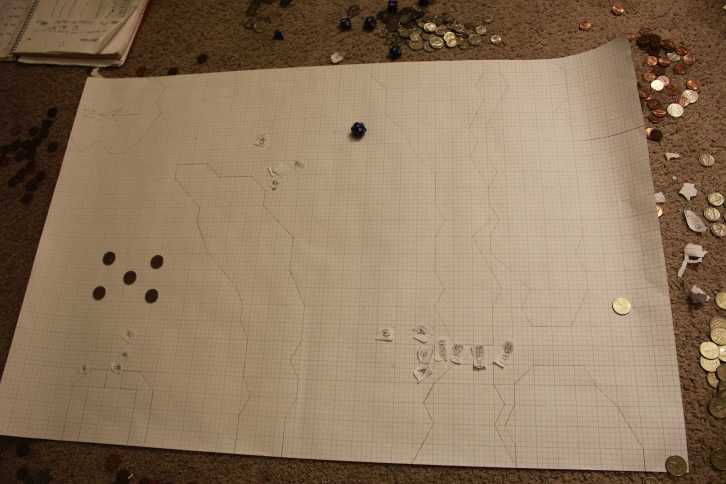 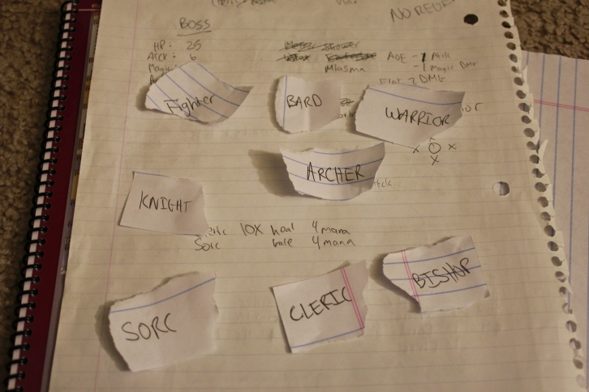 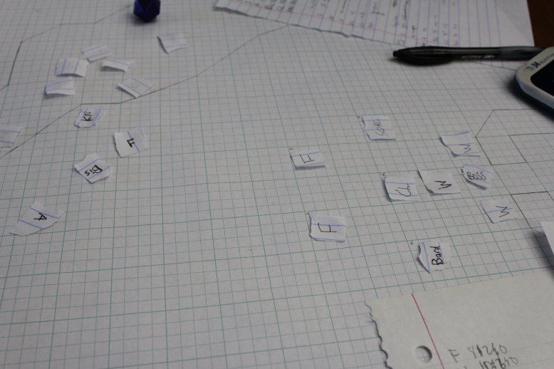
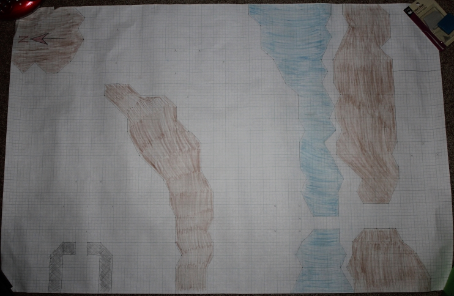
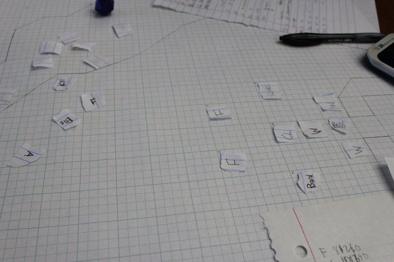
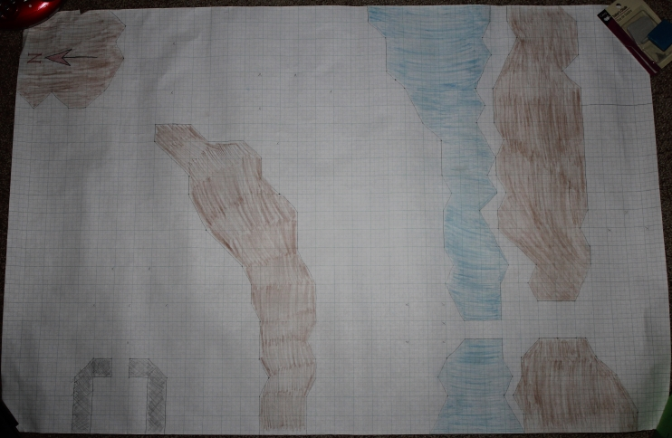